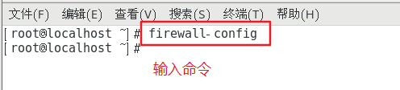

Linux总结
对linux知识点的一些总结。
CENTOS7重装python和yum
编译安装python高版本时，覆盖了系统自带的python，导致很多应用不可用。从网上找了一个修复方法，替换了里面的rpm包的下载地址。另外最后需要重启才能生效。
1、卸载现有的python，强制删除已安装程序及其关联
rpm -qa|grep python|xargs rpm -ev --allmatches --nodeps2、强制删除所有残余文件
whereis python |xargs rm -frv3、卸载现有的yum
rpm -qa|grep yum|xargs rpm -ev --allmatches --nodeps4、强制删除所有残余文件
whereis yum |xargs rm -frv5、下载版本对应的rpm包
wget https://mirrors.aliyun.com/centos/7.9.2009/os/x86_64/Packages/libxml2-python-2.9.1-6.el7.5.x86_64.rpm
wget https://mirrors.aliyun.com/centos/7.9.2009/os/x86_64/Packages/rpm-4.11.3-45.el7.x86_64.rpm
wget https://mirrors.aliyun.com/centos/7.9.2009/os/x86_64/Packages/rpm-build-4.11.3-45.el7.x86_64.rpm
wget https://mirrors.aliyun.com/centos/7.9.2009/os/x86_64/Packages/rpm-build-libs-4.11.3-45.el7.x86_64.rpm
wget https://mirrors.aliyun.com/centos/7.9.2009/os/x86_64/Packages/rpm-libs-4.11.3-45.el7.x86_64.rpm
wget https://mirrors.aliyun.com/centos/7.9.2009/os/x86_64/Packages/rpm-sign-4.11.3-45.el7.x86_64.rpm
wget https://mirrors.aliyun.com/centos/7.9.2009/os/x86_64/Packages/rpm-python-4.11.3-45.el7.x86_64.rpm
wget https://mirrors.aliyun.com/centos/7.9.2009/os/x86_64/Packages/python-2.7.5-89.el7.x86_64.rpm
wget https://mirrors.aliyun.com/centos/7.9.2009/os/x86_64/Packages/python-devel-2.7.5-89.el7.x86_64.rpm
wget https://mirrors.aliyun.com/centos/7.9.2009/os/x86_64/Packages/python-libs-2.7.5-89.el7.x86_64.rpm
wget https://mirrors.aliyun.com/centos/7.9.2009/os/x86_64/Packages/python-pycurl-7.19.0-19.el7.x86_64.rpm
wget https://mirrors.aliyun.com/centos/7.9.2009/os/x86_64/Packages/python-setuptools-0.9.8-7.el7.noarch.rpm
wget https://mirrors.aliyun.com/centos/7.9.2009/os/x86_64/Packages/python-urlgrabber-3.10-10.el7.noarch.rpm
wget https://mirrors.aliyun.com/centos/7.9.2009/os/x86_64/Packages/python-iniparse-0.4-9.el7.noarch.rpm
wget https://mirrors.aliyun.com/centos/7.9.2009/os/x86_64/Packages/python-backports-1.0-8.el7.x86_64.rpm
wget https://mirrors.aliyun.com/centos/7.9.2009/os/x86_64/Packages/python-backports-ssl_match_hostname-3.5.0.1-1.el7.noarch.rpm
wget https://mirrors.aliyun.com/centos/7.9.2009/os/x86_64/Packages/python-chardet-2.2.1-3.el7.noarch.rpm
wget https://mirrors.aliyun.com/centos/7.9.2009/os/x86_64/Packages/python-ipaddress-1.0.16-2.el7.noarch.rpm
wget https://mirrors.aliyun.com/centos/7.9.2009/os/x86_64/Packages/python-kitchen-1.1.1-5.el7.noarch.rpm
wget https://mirrors.aliyun.com/centos/7.9.2009/os/x86_64/Packages/python-virtualenv-15.1.0-4.el7_7.noarch.rpm
wget https://mirrors.aliyun.com/centos/7.9.2009/os/x86_64/Packages/yum-3.4.3-168.el7.centos.noarch.rpm
wget https://mirrors.aliyun.com/centos/7.9.2009/os/x86_64/Packages/yum-metadata-parser-1.1.4-10.el7.x86_64.rpm
wget https://mirrors.aliyun.com/centos/7.9.2009/os/x86_64/Packages/yum-utils-1.1.31-54.el7_8.noarch.rpm
wget https://mirrors.aliyun.com/centos/7.9.2009/os/x86_64/Packages/yum-plugin-fastestmirror-1.1.31-54.el7_8.noarch.rpm
wget https://mirrors.aliyun.com/centos/7.9.2009/os/x86_64/Packages/yum-plugin-protectbase-1.1.31-54.el7_8.noarch.rpm
wget https://mirrors.aliyun.com/centos/7.9.2009/os/x86_64/Packages/yum-plugin-aliases-1.1.31-54.el7_8.noarch.rpm下载完成后安装这些包(–force强制安装)
rpm -Uvh --force --nodeps --replacepkgs *.rpm安装完这些rpm包后，重启服务器
poweroff # 立即关机
shutdown -h now # 停止服务器并关机
shutdown -h 10:00 # 10点关机
shutdown -h +10 # 10分钟后关机
shutdown -r now # 重启
reboot # 重启，和 shutdown -r now 一样Linux防火墙
主要有iptables和firewalld。
一、iptables
1. 概述
Linux系统的防火墙：IP信息包过滤系统，它实际上由两个组件netfilter和iptables组成。
主要工作在网络层，针对IP数据包。体现在对包内的IP地址、端口等信息的处理上。
2. netfilter和iptables
（1）netfilter
netfilter属于“内核态”（Kernel Space，又称为内核空间）的防火墙功能体系；
是内核的一部分，由一些数据包过滤表组成，这些表包含内核用来控制数据包过滤处理的规则集。
（2）iptables
iptables属于“用户态”（User Space，又称为用户空间）的防火墙管理体系；
是一种用来管理Linux防火墙的命令程序，它使插入、修改和删除数据包过滤表中的规则变得容易，通常位于/sbin/iptables目录下。
（3）netfile/iptables
netfilter/iptables下文中统一简称为iptables。
iptables是基于内核的防火墙，其中内置了raw、mangle、nat和 filter四个规则表。
表中所有规则配置后，立即生效，不需要重启服务。
3. 四表五链
（1）四表
规则表的作用：容纳各种规则链，即表中有链。
| 规则表 | 说明 |
|---|---|
| raw表 | 确定是否对该数据包进行状态跟踪。包含两个规则链，OUTPUT、PREROUTING |
| mangle表 | 修改数据包内容，用来做流量整形的，给数据包设置标记。包含五个规则链，INPUT、OUTPUT、FORWARD、PREROUTING、POSTROUTING |
| nat表 | 负责网络地址转换，用来修改数据包中的源、目标IP地址或端口。包含三个规则链，OUTPUT、PREROUTING、POSTROUTING。 |
| filter表 | 负责过滤数据包，确定是否放行该数据包（过滤）。包含三个规则链，INPUT、FORWARD、OUTPUT |
注：在iptables的四个规则表中，mangle表和raw表的应用相对较少
（2）五链
规则链的作用：容纳各种防火墙规则，即链中有规则。
| 规则链 | 说明 |
|---|---|
| INPUT | 处理入站数据包，匹配目标IP为本机的数据包 |
| OUTPUT | 处理出站数据包，一般不在此链上做配置 |
| FORWARD | 处理转发数据包，匹配流经本机的数据包 |
| PREROUTING | 在进行路由选择前处理数据包，用来修改目的地址，用来做DNAT。相当于把内网中的80端口映射到路由器外网端口上 |
| POSTROUTING链 | 在进行路由选择后处理数据包，用来修改源地址，用来做SNAT。相当于内网通过路由器NAT转换功能实现内网主机通过一个公网IP地址上网 |
（3）规则表的匹配顺序
raw>>mangle>>nat>>filter
（4）规则链之间的匹配顺序

- 主机型防火墙
1）入站数据（来自外界的数据包，且目标地址是防火墙本机）
PREROUTING –> INPUT –> 本机的应用程序
2）出站数据（从防火墙本机向外部地址发送的数据包）
本机的应用程序 –> OUTPUT –> POSTROUTING - 网络型防火墙
转发数据（需要经过防火墙转发的数据包）
PREROUTING –> FORWARD –> POSTROUTING - 规则链内的匹配顺序
1）自上向下按顺序依次进行检查，找到相匹配的规则即停止（LOG策略例外，表示记录相关日志）
2）若在该链内找不到相匹配的规则，则按该链的默认策略处理（未修改的状况下，默认策略为允许）
4. iptables的安装
CentOS 7默认使用firewalld防火墙，没有安装iptables，若想使用iptables防火墙。必须先关闭firewalld防火墙，再安装iptables
#关闭防火墙
systemctl stop firewalld.service
systemctl disable firewalld.service
#安装并开启iptables服务
yum -y install iptables iptables-services
systemctl start iptables.service5. iptables防火墙的配置
（1）命令行配置格式

（2）注意事项
- 不指定表名时，默认指filter表
- 不指定链名时，默认指表内的所有链
- 除非设置链的默认策略，否则必须指定匹配条件
- 选项、链名、控制类型使用大写字母，其余均为小写
（3）常用的控制类型
| 控制类型 | 作用 |
|---|---|
| ACCEPT | 允许数据包通过。DROP直接丢弃数据包，不给出任何回应信息 |
| REJECT | 拒绝数据包通过，会给数据发送端一个响应信息 |
| SNAT | 修改数据包的源地址 |
| DNAT | 修改数据包的目的地址 |
| MASQUERADE | 伪装成一个非固定公网IP地址 |
| LOG | 在/var/log/messages文件中记录日志信息，然后将数据包传递给下一条规则。LOG只是一种辅助动作，并没有真正处理数据包 |
（4）常用的管理选项
| 选项 | 说明 |
|---|---|
| -A | 在指定链的末尾追加（–append）一条新的规则 |
| -I | 在指定链的开头插入（–insert）一条新的规则，未指定序号时默认作为第一条规则 |
| -R | 修改、替换（–replace）指定链中的某一条规则，可指定规则序号或具体内容 |
| -P | 设置指定链的默认策略（–policy） |
| -D | 删除（–delete）指定链中的某一条规则，可指定规则序号或具体内容 |
| -F | 清空（–flush）指定链中的所有规则，若未指定链名，则清空表中的所有链 |
| -L | 列出（–list）指定链中所有的规则，若未指定链名，则列出表中的所有链 |
| -n | 使用数字形式（–numeric）显示输出结果，如显示IP地址而不是主机名 |
| -v | 显示详细信息，包括每条规则的匹配包数量和匹配字节数 |
| –line-numbers | 查看规则时，显示规则的序号 |
（5）匹配条件
| 匹配条件 | 说明 |
|---|---|
| -p | 指定要匹配的数据包的协议类型 |
| -s | 指定要匹配的数据包的源IP地址 |
| -d | 指定要匹配的数据包的目的IP地址 |
| -i | 指定数据包进入本机的网络接口 |
| -o | 指定数据包离开本机做使用的网络接口 |
| –sport | 指定源端口号 |
| –dport | 指定目的端口号 |
6. 匹配类型

①通用匹配
直接使用，不依赖于其他条件或扩展，包括网络协议、IP地址、网络接口等条件
协议匹配：-p 协议名
地址匹配：-s 源地址、-d 目的地址 #可以是IP、网段、域名、空（任何地址）
接口匹配：-i 入站网卡、-o 出站网卡
例：
iptables -A FORWARD ! -p icmp -j ACCEPT
iptables -A INPUT -s 192.168.80.11 -j DROP
iptables -I INPUT -i ens33 -s 192.168.80.0/24 -j DROP②隐含匹配
以特定的协议匹配作为前提，包括端口、TCP标记、ICMP类型等条件
- 端口匹配
--sport 源端口 --dport 目的端口 #可以是个别端口、端口范围
--sport 1000 匹配源端口是1000的数据包
--sport 1000:3000 匹配源端口是1000-3000的数据包
--sport :3000 匹配源端口是3000及以下的数据包
--sport 1000: 匹配源端口是1000及以上的数据包
注意：--sport 和 --dport 必须配合 -p <协议类型> 使用
例：
iptables -A INPUT -p tcp --dport 20:21 -j ACCEPT
iptables -I FORWARD -d 192.168.80.0/24 -p tcp --dport 24500:24600 -j DROP- TCP标记匹配
--tcp-flags TCP标记
iptables -I INPUT -i ens33 -p tcp --tcp-flags SYN,RST,ACK SYN -j ACCEPT #丢弃SYN请求包，放行其他包- ICMP类型匹配
--icmp-type ICMP类型 #可以是字符串、数字代码、、目标不可达
“Echo-Request”（代码为 8）表示 请求
“Echo-Reply”（代码为 0）表示 回显
“Destination-Unreachable”（代码为 3）表示 目标不可达
关于其它可用的 ICMP 协议类型，可以执行“iptables -p icmp -h”命令，查看帮助信息
例：
iptables -A INPUT -p icmp --icmp-type 8 -j DROP #禁止其它主机ping 本机
iptables -A INPUT -p icmp --icmp-type 0 -j ACCEPT #允许本机ping其它主机
iptables -A INPUT -p icmp --icmp-type 3 -j ACCEPT #当本机ping不通其它主机时提示目标不可达
iptables -A INPUT -p icmp -j REJECT #此时其它主机需要配置关于icmp协议的控制类型为 REJECT③显示匹配
要求以“-m 扩展模块”的形式明确指出类型，包括多端口、MAC地址、IP范围、数据包状态等条件
- 多端口匹配
-m multiport --sports 源端口列表
-m multiport --dports 目的端口列表
例：
iptables -A INPUT -p tcp -m multiport --dport 80,22,21,20,53 -j ACCEPT
iptables -A INPUT -p udp -m multiport --dport 53 -j ACCEPT- IP范围匹配
-m iprange --src-range IP范围
iptables -A FORWARD -p udp -m iprange --src-range 192.168.80.100-192.168.80.200 -j DROP - 状态匹配
-m state --state 连接状态
常见的连接状态：
NEW ：与任何连接无关的，还没开始连接
ESTABLISHED ：响应请求或者已建立连接的，连接态
RELATED ：与已有连接有相关性的（如FTP 主被动模式的数据连接），衍生态，一般与ESTABLISHED 配合使用
INVALID ：不能被识别属于哪个连接或没有任何状态
iptables -A FORWARD -m state --state NEW -p tcp ! --syn -j DROP #禁止转发与正常 TCP 连接无关的非--syn 请求数据包（如伪造的网络攻击数据包）7. SNAT原理与应用
（1）应用环境
局域网主机共享单个公网IP地址接入Internet（私有IP不能在Internet中正常路由）。
一个IP地址做SNAT转换，一般可以让内网 100到200 台主机实现上网。
（2）原理
修改数据包的源地址
（3）SNAT转换前提条件
局域网各主机已正确设置IP地址、子网掩码、默认网关地址
Linux网关开启IP路由转发
（4）路由转发开启方式
1.临时打开：
echo 1 > /proc/sys/net/ipv4/ip_forward
或
sysctl -w net.ipv4.ip_forward=1
2.永久打开：
vim /etc/sysctl.conf
net.ipv4.ip_forward = 1 #将此行写入配置文件
3.sysctl -p #读取修改后的配置（5）SNAT转换具体格式
- 固定的公网IP地址：
iptables -t nat -A POSTROUTING -s 192.168.80.0/24(内网IP) -o(出站) ens33(外网网卡) -j SNAT --to 12.0.0.1(外网IP或地址池)
或
iptables -t nat -A POSTROUTING -s 192.168.80.0/24(内网IP) -o(出站) ens33(外网网卡) -j SNAT --to-source 12.0.0.1-12.0.0.10(外网IP或地址池)- 非固定的公网IP地址（共享动态IP地址）：
iptables -t nat -A POSTROUTING -s 192.168.80.0/24 -o ens33 -j MASQUERADE8. DNAT原理与应用
（1）应用环境
在Internet中发布位于局域网内的服务器。
主机型防火墙：主要使用INPUT、OUTPUT链，设置规则时一般要详细的指定到端口。
网络型防火墙：主要使用FORWARD链，设置规则时很少去指定到端口，一般指定到IP地址或者到网段即可。
（2）原理
修改数据包的目的地址
（3）DNAT转换前提条件
局域网的服务器能够访问Internet
网关的外网地址有正确的DNS解析记录
Linux网关开启IP路由转发
（4）DNAT转换
使用DNAT时，同时配合SNAT使用，才能实现响应数据包的正确返回
- 发布内网的Web服务
#把从ens33进来的要访问web服务的数据包目的地址转换为 192.168.80.11
iptables -t nat -A PREROUTING -i(入站) ens33(外网网卡) -d 12.0.0.1(外网IP) -p tcp --dport 80 -j DNAT --to 192.168.80.11(内网服务器Ip)
或
iptables -t nat -A PREROUTING -i(入站) ens33(外网网卡) -d 12.0.0.1(外网IP) -p tcp --dport 80 -j DNAT --to-destination 192.168.80.11(内网服务器IP)
iptables -t nat -A PREROUTING -i ens33 -p tcp --dport 80 -j DNAT --to 192.168.80.11-192.168.80.20(地址池)- 发布时修改目标端口
#发布局域网内部的OpenSSH服务器，外网主机需使用250端口进行连接
iptables -t nat -A PREROUTING -i ens33 -d 12.0.0.1 -p tcp --dport 250 -j DNAT --to 192.168.80.11:22
ssh -p 250 root@12.0.0.1 #在外网环境中使用SSH测试
yum -y install net-tools #若没有 ifconfig 命令可提前使用 yum 进行安装
ifconfig ens339. 防火墙规则的备份和还原
（1）导出（备份）所有表的规则
iptables-save > /opt/ipt.txt（2）导入（还原）规则
iptables-restore < /opt/ipt.txt
将iptables规则文件保存在 /etc/sysconfig/iptables 中，iptables服务启动时会自动还原规则
iptables-save > /etc/sysconfig/iptables
systemctl stop iptables #停止iptables服务会清空掉所有表的规则
systemctl start iptables #启动iptables服务会自动还原/etc/sysconfig/iptables 中的规则二、firewalld
1. firewalld防火墙简介
firewalld防火墙是Centos7系统默认的防火墙管理工具，取代了之前的iptables防火墙，也是工作在网络层，属于包过滤防火墙
firewalld和iptables都是用来管理防火墙的工具(属于用户态)来定义防火墙的各种规则功能，内部结构都指向netfilter网络过滤子系统(属于内核态)来实现包过滤防火墙功能
firewalld提供了支持网络区域所定义的网络连接以及接口安全等级的动态防火墙管理工具
它支持IPv4、IPv6防火墙设置以及以太网桥(在某些高级服务可能会用到，比如云计算)，并且拥有两种配置模式:运行时配置与永久配置
2. firewalld与iptables的区别
| 区别项 | firewalld | iptables |
|---|---|---|
| 配置文件 | /usr/lib/firewalld /etc/firewalld | /etc/sysconfig/iptables |
| 对规则的修改 | 不需要全部刷新策略，不丢失现行连接 | 需要全部刷新策略，丢失连接 |
| 防火墙类型 | 动态防火墙 | 静态防火墙 |
- iptables主要是基于接口，来设置规则，从而判断网络的安全性；firewalld是基于区域，根据不同的区域来设置不同的规则，从而保证网络的安全。与硬件防火墙的设置相类似
- iptables在/etc/ sysconfig/iptables中储存配置；firewalld将配置储存在/etc/firewalld/(优先加载)和/usr/lib/ firewalld/ (默认的配置文件)中的各种XML文件里
- 使用iptables每一个单独更改意味着清除所有旧有的规则和从/etc/sysconfig/iptables里读取所有新的规则；使用firewalld却不会再创建任何新的规则，仅仅运行规则中的不同之处。因此firewalld可以在运行时间内，改变设置而不丢失现行连接
- iptables防火墙类型为静态防火墙；firewalld防火墙类型为动态防火墙
3. firewalld区域的概念
firewalld防火墙为了简化管理，将所有网络流量分为多个区（zone），然后根据数据包的源IP地址或传入的网络接口等条件将流量传入相应区域。每个区域都定义了自己打开或者关闭的端口和服务列表
（1）firewalld防火墙9个区域
| 区域 | 说明 |
|---|---|
| trusted（信任区域） | 允许所有的传入流量 |
| public（公共区域） | 允许与ssh或dhcpv6-client预定义服务匹配的传入流量，其余均拒绝。是新添加网络接口的默认区域 |
| external（外部区域） | 允许与 ssh 预定义服务匹配的传入流量，其余均拒绝。 默认将通过此区域转发的IPv4传出流量将进行地址伪装，可用于为 路由器启用了伪装功能的外部网络 |
| home（家庭区域） | 允许与ssh、ipp-client、mdns、samba-client或dhcpv6-client预定义服务匹配的传入流量，其余均拒绝 |
| internal（内部区域） | 默认值时与home区域相同 |
| work（工作区域） | 允许与 ssh、ipp-client、dhcpv6-client 预定义服务匹配的传入流量，其余均拒绝 |
| dmz（隔离区域也称为非军事区域） | 允许与 ssh 预定义服务匹配的传入流量，其余均拒绝 |
| block（限制区域） | 拒绝所有传入流量 |
| drop（丢弃区域） | 丢弃所有传入流量，并且不产生包含ICMP的错误响应 |
（2）区域介绍
- 最终一个区域的安全程度是取决于管理员在此区域中设置的规则
- 区域如同进入主机的安全门，每个区域都具有不同限制程度的规则，只会允许符合规则的流量传入
- 可以根据网络规模，使用一个或多个区域，但是任何一个 活跃区域 至少需要关联 源地址或接口
- 默认情况下，public区域是默认区域，包含所有接口（网卡）
4. firewalld数据处理流程
firewalld对于进入系统的数据包，会根据数据包的源IP地址或传入的网络接口等条件，将数据流量转入相应区域的防火墙规则。对于进入系统的数据包，首先检查的就是其源地址
5. firewalld检查数据包的源地址规则
- 若源地址关联到特定的区域（即源地址或接口绑定的区域有冲突），则执行该区域所制定的规则
- 若源地址未关联到特定的区域（即源地址或接口绑定的区域没有冲突），则使用传入网络接口的区域并执行该区域所制定的规则
- 若网络接口也未关联到特定的区域（即源地址或接口都没有绑定特定的某个区域），则使用默认区域并执行该区域所制定的规则
6. firewalld防火墙的配置方法
（1）使用firewall-cmd命令行工具
| 常用的firewall-cmd命令选项 | 说明 |
|---|---|
| –get-default-zone | 显示当前默认区域 |
| –set-default-zone= | 设置默认区域 |
| –get-active-zones | 显示当前正在使用的区域及其对应的网卡接口 |
| –get-zones | 显示所有可用的区域 |
| –get-zone-of-interface= | 显示指定接口绑定的区域 |
| –zone= –add-interface= | 为指定接口绑定区域 |
| –zone= –change-interface= | 为指定的区域更改绑定的网络接口 |
| –zone= –remove-interface= | 为指定的区域删除绑定的网络接口 |
| –get-zone-of-source=[/] | 显示指定源地址绑定的区域 |
| –zone= –add-source=[/] | 为指定源地址绑定区域 |
| –zone= –change-source=[/] | 为指定的区域更改绑定的源地址 |
| –zone= –remove-source=[/] | 为指定的区域删除绑定的源地址 |
| –list-all-zones | 显示所有区域及其规则 |
| [–zone=] –list-all | 显示所有指定区域的所有规则，省略–zone=时表示仅对默认区域操作 |
| [–zone=] –list-services | 显示指定区域内允许访问的所有服务 |
| [–zone=] –add-service= | 为指定区域设置允许访问的某项服务 |
| [–zone=] –remove-service= | 删除指定区域已设置的允许访问的某项服务 |
| [–zone=] –list-ports | 显示指定区域内允许访问的所有端口号 |
| [–zone=] –add-port=[-]/ | 为指定区域设置允许访问的某个/某段端口号（包括协议名） |
| [–zone=] –remove-port=[-]/ | 删除指定区域已设置的允许访问的端口号（包括协议名） |
| [–zone=] –list-icmp-blocks | 显示指定区域内拒绝访问的所有 ICMP 类型 |
| [–zone=] –add-icmp-block= | 为指定区域设置拒绝访问的某项 ICMP 类型 |
| [–zone=] –remove-icmp-block= | 删除指定区域已设置的拒绝访问的某项ICMP类型 |
| firewall-cmd –get-icmptypes | 显示所有 ICMP 类型 |
（2）使用firewall-config图形工具

（3）编写/etc/firewalld/中的配置文件

7. 区域管理
- 显示当前系统中的默认区域
firewall-cmd –get-default-zone - 显示默认区域的所有规则
firewall-cmd –list-all - 显示当前正在使用的区域及其对应的网卡接口
firewall-cmd –get-active-zones - 设置默认区域
firewall-cmd –set-default-zone=home
firewall-cmd –get-default-zone
8. 服务管理
- 查看默认区域内允许访问的所有服务
firewall-cmd –list-service - 添加httpd 服务到public 区域
firewall-cmd –add-service=http –zone=public - 查看public 区域已配置规则
firewall-cmd –list-all –zone=public - 删除public 区域的httpd 服务
firewall-cmd –remove-service=http –zone=public - 同时添加httpd、https 服务到默认区域，设置成永久生效
firewall-cmd –add-service=http –add-service=https –permanent
firewall-cmd –reload
firewall-cmd –list-all - 添加使用 –permanent选项表示设置成永久生效，需要重新启动firewalld服务或执行firewall-cmd –reload命令，重新加载防火墙规则时才会生效。若不带有此选项，表示用于设置运行时规则，但是这些规则在系统或firewalld服务重启、停止时配置将失效。
- –runtime-to-permanent：将当前的运行时配置写入规则配置文件中，使之成为永久性配置
9. 端口管理
- 允许TCP的443端口到internal区域
firewall-cmd –zone=internal –add-port=443/tcp
firewall-cmd –list-all –zone=internal - 从internal 区域将TCP的443端口移除
firewall-cmd –zone=internal –remove-port=443/tcp - 允许UDP的2048~2050端口到默认区域
firewall-cmd –add-port=2048-2050/udp
firewall-cmd –list-all
三、linux系统抓包
1. 格式
例：tcpdump tcp -i ens33 -t -s 0 -c 100 and dst port ! 22 and src net 192.168.1.0/24 -w ./target.cap2. 选项
| 选项 | 说明 |
|---|---|
| tcp | ip icmp arp rarp和tcp、udp、icmp这些选项等都要放到第一个参数的位置，用来过滤数据包的类型 |
| -i ens33 | 只抓经过接口ens33的包 |
| -t | 不显示时间戳 |
| -s 0 | 抓取数据包时默认抓取长度为68字节。加上-s 0后可以抓取完整的数据包 |
| -c 100 | 只抓取100个数据包 |
| dst port ！22 | 不抓取目标端口是22的数据包 |
| src net 192.168.1.0/24 | 数据包的源网络地址为192.168.1.0/24 |
| -w ./target.cap | 保存成cap文件，方便用ethereal（wireshark）分析 |